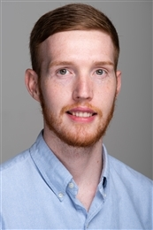

People
Meet the team
Our research group is embedded within the Utrecht University Virology Section at the Faculty of Veterinary Medicine. Together, we aim to understand viruses in detail, from their molecular biology to their ability to cross species barriers, and to translate that knowledge into vaccines, antiviral therapies, and diagnostic tools.

Within this environment, my team focuses on advancing the molecular understanding of viral diseases. We use cryo-electron microscopy (single-particle analysis and in situ cryo-electron tomography) combined with computational, biochemical and virological techniques to uncover how viruses function at the molecular level.

Principal investigator
Dr. Daniel Hurdiss
Assistant Professor · Infectious Diseases & Immunology
Career
- 2026–present
Assistant Professor (UD1), Utrecht University, Utrecht, NL.
- 2021–2025
Assistant Professor (UD2), Utrecht University, Utrecht, NL.
- 2019–2021
Marie Sklodowska-Curie Individual Fellow and EMBO non-stipendiary Long-Term Fellow, Utrecht University, Utrecht, NL.
- 2014–2018
PhD in Structural Biology, University of Leeds, Leeds, UK.
- 2010–2014
BSc (Hons) Microbiology (Industrial), University of Leeds, Leeds, UK, Awarded First Class.
Selected honors and awards
2026Sir Dave Stuart Early Career Researcher Award
The award of Instruct-ERIC and Thermo Fisher Scientific, a technology leader in the development of cryo-electron microscopes, recognises outstanding scientific contributions of young investigators that establish an independent career.
2026ACS Infectious Diseases Early Career Award
The ACS Infectious Diseases Early Career Award celebrates scientific excellence by recognizing three researchers each year who have made significant and influential contributions to infectious disease research within the first decade of their independent careers.
2025EMBO Young Investigator
The EMBO Young Investigator Programme supports life scientists who have been group leaders for less than four years at the time of application in setting up their laboratories. Young Investigators receive financial support for networking for four years and benefit from training opportunities, support for their lab members and mentoring.
2025Kluyver Award
The KNVM board makes the Albert Kluyver award available to microbiologists currently employed at Dutch institutions with an outstanding contribution to microbiology within eight years after obtaining their PhD.
2023Beijerinck Premium
Established in 2002, this award recognises talented researchers at the start of their careers who conduct excellent virus-oriented research and thus set an example for other young virologists. The Beijerinck Premium is awarded annually by the Royal Netherlands Academy of Arts and Sciences (KNAW). The laureate receives a cash prize of €25,000 to spend on virus-oriented research.
2022Van Leeuwenhoek Award
The KNVM/NVMM science committee offers the Van Leeuwenhoek Awards to young Postdocs in microbiology (5 years after obtaining your PhD) for the best publication as first, last and/or corresponding author.
2020BBS Kendrew Doctoral Thesis Prize
Established in 2019 by the British Biophysical Society and is awarded biennially for an outstanding PhD thesis in biophysics for which the principal work has been carried out in the UK or Ireland.
2019VC Jordan/PR Radford Prize
Awarded annually to the best PhD student thesis in the Astbury Centre, University of Leeds, UK.
2018Alumnus of the 68th Lindau Nobel Laureate Meeting
Nominated by the University of Leeds and the Royal Society and then selected by the scientific review panel of the Council for the Lindau Nobel Laureate Meeting.
2017Sir Howard Dalton Young Microbiologist of the Year
Microbiology Society, Nominated for the award after presenting at the annual conference in Edinburgh. Invited to present again against six other finalists and was chosen as the winner by a panel of judges.
Current members
The team today
Post-Doctoral Researchers
- Dr. Robin Veenstra2024–present
PhD Candidates
Primary Supervisor
- Meryl Haas2022–present
- Tino Hoeksma2025–present
- Teja Shyam Kankipati2026–present
Secondary Supervisor
- Bob Coelingh2023–present
- Victor Pissabarro2023–present
- Harry Libbey2024–present
- Jelle Melchers2024–present
MSc Students
- Maud Beusen2026–present
BSc Students
- Lillian Booij2026
- Sofie Schutte2026
Lab alumni
Former members
Post-Doctoral Researchers
- Dr. Oliver Debski-Antoniak2021–2025
- Dr. Preeti Hooda2023–2025
Research Technicians
- Hatice Ozhan2023–2025
- Marianthi Hadjiandreou2021–2023
- Tim Donselaar2021–2023
MSc Students
- Simon Alkema2025
- Eric Sala Solé2025
- Judith Ahr2024–2025
- Sam Peppard2023–2025
- Stefan Kopecky2023–2024
- Henrietta Hóf2023
- Sypke van Terwisga2022
- Victor Pisabarro2022
BSc Students
- Anouk Maas2025
- Tessa Brafine2025
- Anne-Sophie Ewijk2024–2025
- Andressa Pelster José2024
- Bram Timmermans2024
- Coco Niemel2023–2024
- Rieneke Wonink2022
Visiting Researchers
- Dominika Sousedová2026
- Marine Faucher2026
- Jana Ferenczeiová2025